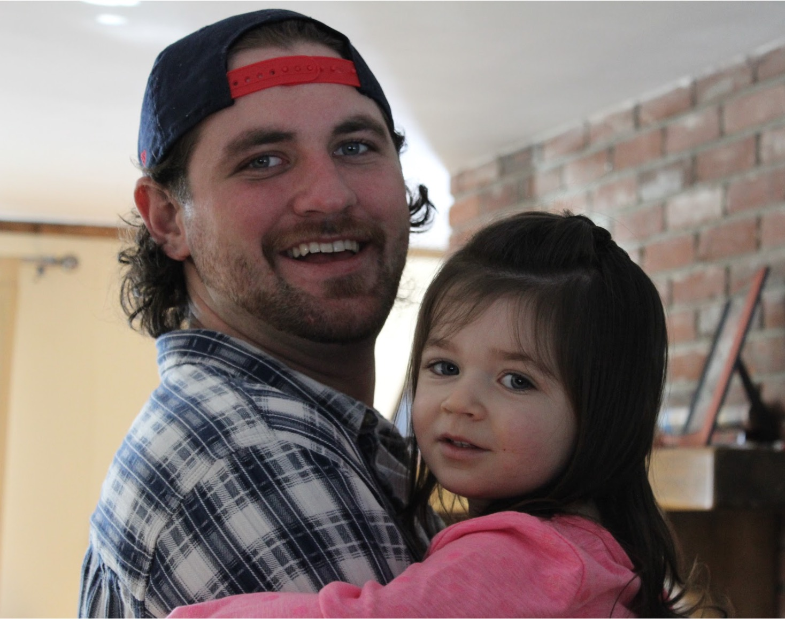

They had been looking for years. They had contacted adoption agencies across the country. They had placed advertisements in local newspapers. At one point, Ken and Theresa Ferri, accountants from North Kingstown, even extended their search to Romania and Russia.
Then one Tuesday morning in the spring of 1992, the couple’s phone rang. The adoption agency had found a woman in Massachusetts — a college student who had recently given birth to a baby boy. The young mother had seen the Ferris’ adoption profile and wanted to meet.
A few days later, the couple, the woman and the parties’ respective social workers met in a restaurant in Wellesley, MA. “Why did you pick us?” Ken asked the birth mother, dumb founded at their luck after years of searching.
“In your profile you said you liked sports,” she replied. “I want my son to grow up in a household with sports.”
At the end of the meal, they hugged. The following Monday, the Ferris collected their new son. He was just a few weeks old, a baby with big blue eyes, ears that stuck out a little and freckles over the bridge of his nose.
“The greatest day of my life,” says Ken, now 58. “The day that I held him.” Theresa had been unable to conceive because of her lupus.
The couple named their new baby Jason. A few years later, they would adopt a second son, Matthew.
Sports — baseball, in particular — did indeed become a defining feature of Jason’s upbringing. He played on the North Kingstown High School team as well as for a traveling youth team that saw the family travel to states including Georgia and Florida to watch Jason play. He wanted to be a star.
Theresa died from complications of her lupus in December, 2008. Her passing impacted Jason on how he managed difficult times, Ken suspects, but he continued to excel. After securing multiple baseball scholarships from schools across the Northeast, Jason chose to attend the University of Rhode Island in 2010. That’s when things began to unravel, according to his father.
Baseball soon lost its allure for Jason. He became irritable, confused and unmoored. He struggled academically. He began experimenting with pain pills he bought on the street, Vicodin and Percocet. It made his arm feel better when he pitched, he said.
After two years at URI, Jason, age 20, walked away from the baseball team, and from his scholarship. He completed an associates degree and played one more year of baseball at Community College of Rhode Island, but decided that was enough. “Dad, I just don’t love it any more,” he told Ken.
It was around this time, while Jason was working odd jobs around the state, that he fathered a child, a daughter named Blake.
It was only when Jason was caught trying to steal a prescription pad from Roger Williams Hospital, where he had been working as a security guard, that he told his parents what Ken had long suspected: he had a substance use disorder.
His lawyer strongly encouraged Jason to consider rehab, so the court would look upon his case more favorably. He obliged and, instead of serving prison time, went to a rehabilitation facility in California. During his month-long stay, Ken visited. “I have my son back,” he recalls thinking during the visit, overjoyed. “I could tell by his eyes. They were as blue as can be.”
But about four months after returning to Rhode Island, Jason relapsed. “And it got uglier because he introduced fentanyl,” Ken said.
Sooner after, at Ken’s urging, Jason went to another rehabilitation center, this time in Texas for around six weeks. But he couldn’t beat the addiction.
He overdosed from fentanyl within 48 hours of being back in Rhode Island. EMTs were able to resuscitate him but ten days later, he overdosed again at a family friend’s home in Narragansett. This time, he didn’t wake up. He was 24 years old.
Jason is buried in Carolina, Rhode Island, next to his mother, Theresa.
But Ken continues to see his son everywhere. In strawberry cheesecake — Jason’s favorite dessert. While watching a Patriots game on TV. Driving past a baseball field and seeing children playing Little League.
And, when he looks at his granddaughter, Blake. She, too, has big blue eyes, ears that stick out a little and freckles over the bridge of her nose.
